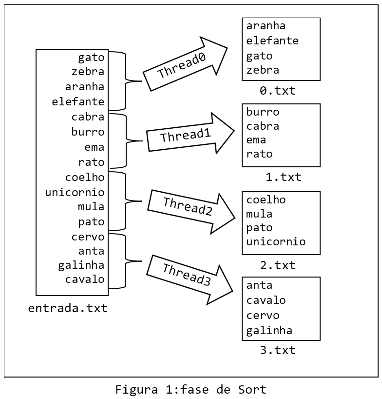

Lab de Threads¶
Introdução¶
No Laboratório de Threads, iremos implementar um algoritmo de ordenação de grandes volumes de dados utilizando Threads para ganhar desempenho. O algoritmo, chamado Sort-Merge (ordenação-junção), é utilizado para ordenar dados em situações nas quais não é possível carregar todos os dados na memória do computador. No caso dos algoritmos de ordenação tradicionais, como InsertionSort ou BubbleSort, os dados são carregados na memória da máquina e ordenados.
O algoritmo Sort-Merge possui duas fases distintas, com cada fase consistindo em vários passos. Na primeira fase, chamada fase de Sort (ordenação), os dados são divididos em partes que caibam na memória disponível, e são então ordenados e armazenados em arquivos temporários. Essa fase resulta na criação de um conjunto de arquivos temporários, cada um contendo partes (regiões) do arquivo original ordenados. A Figura 1 abaixo ilustra a fase de Sort.

Na segunda fase, denominada fase de Merge (junção), pares de arquivos temporários criados na fase anterior são lidos dos arquivos temporários e ordenados, intercalando em ordem crescente os elementos lidos, de modo a resultar em um novo conjunto de arquivos temporários ordenados. Os itens de dois arquivos da etapa anterior são intercalados até que se obtenha um arquivo com todos os dados ordenados. A Figura 2 abaixo ilustra a fase de Merge

Restrições¶
Este exercício serve como avaliação dos conceitos vistos na disciplina. Portanto, algumas restrições serão aplicadas ao código de vocês:
-
Todo trabalho com arquivos deverá ser feito usando as APIs POSIX vistas em aula. Não é permitido o uso de funções da
Standard I/Opara manipulação de arquivos, como por exemplofopen(),fdopen(),fscanf(),fprintf()fread()efclose(). Tambén não é permitido o uso de variáveis globais na sua solução. -
Se você usar algum trecho de código da documentação (ou de outra fonte), coloque uma atribuição em um comentário no código.
-
Fica proibido o uso de ferramentas de geração de código automático por IA, como por exemplo o ChatGPT.
O que precisa ser feito¶
Sua tarefa é completar a implementação do algoritmo Sort-Merge, estão disponibilizados no sue repositório de entregas na pasta lab/03-lab-threads o código binário de dois programas (sort.o e sort-merge.o) que auxiliarão no desenvolvimento da sua solução.
O programa sort.o contem a implementação da criação das threads para fase de Sort, veja a seguir.
#include ....
void * sort(void *args);
int main(int nArgs, char **argv)
{
int nThreads, nItens;
int fdIn;
if (nArgs < 4){
printf("USAGE:\n");
printf("./sort <qtd threads> <qtd itens> <arquivo com itens>\n");
return -1;
}
nThreads = atoi(argv[1]);
nItens = atoi(argv[2]);
fdIn=open(argv[3],O_RDONLY) ;
if( fdIn < 0 )
{
fprintf(stderr,"./sort: Erro falha na abertura do arquivo %s \n", argv[3]);
exit(EXIT_FAILURE);
}
printf("Serao criadas %d threads.\n",nThreads);
pthread_t *tids = malloc(nThreads * sizeof(pthread_t));
struct sort_args *vet_sort = malloc(nThreads * sizeof(struct sort_args));
pthread_mutex_t mutex_file = PTHREAD_MUTEX_INITIALIZER;
for (int i = 0; i < nThreads; i++) {
vet_sort[i].idxThread = i;
vet_sort[i].nThreads = nThreads;
vet_sort[i].lineFiles = nItens;
vet_sort[i].mutex_file = &mutex_file;
vet_sort[i].fdIn = fdIn;
pthread_create(&tids[i], NULL, sort, &vet_sort[i]);
printf("Criou thread:%d fase sort\n", i);
}
printf("Funcao main() espera as threads sort finalizarem...\n");
for (int i = 0; i < nThreads; i++) {
pthread_join(tids[i], NULL);
close(vet_sort[i].fdOut);
}
close(fdIn);
free(vet_sort);
free(tids);
printf("Funcao main() FASE Sort finalizando normalmente...\n");
return 0;
}
Você deve implementar a função void * sort(void * args) que representa a thread responsável em ler concorrentemente o arquivo de entrada no arquivo solucao.c, esse arquivo conterá as soluções das fase de Sort e fase de Sort-Merge. Para compilar a sua solução use o comando:
$ gcc -g -Og -Wall sort.o solucao.c -o sort -pthread
Para executar o programa e testar sua solução, informe por linha de comando o número de threads (nThreads) que o programa deverá criar e o quantidade de itens (nItens) no arquivo que será ordenado e o nome do arquivo, por exemplo:
./sort nThreads nItens arqIn
./sort 4 16 in16.txt
Considere que o número de Threads nThreads sempre será maior igual a 2 e é uma potência de 2, mas nem sempre a divisão do número de itens no arquivo nItens por nThreads terá resto 0. Por exemplo se nThreads=4 e nItens=19
As 3 primeiras Threads trabalharam com 4 itens e a última com 7 itens na fase de Sort
O programa sort-merge.o contem a implementação completa da criação das threads para fase de Sort e para fase de Merge, e após resolver a fase anterior você pode compilar esse programa junto com a sua solução no arquivo solucao.c.
#include ..
void * sort(void *args);
void * merge(void *args);
int main(int nArgs, char **argv)
{
int nThreads, nItens;
int fdIn;
int *vet_fdOut;
if (nArgs < 4){
printf("USAGE:\n");
printf("./sort-merge <qtd threads> <qtd itens> <arquivo com itens>\n");
return -1;
}
nThreads = atoi(argv[1]);
nItens = atoi(argv[2]);
fdIn=open(argv[3],O_RDONLY) ;
if( fdIn < 0 )
{
fprintf(stderr,"./sort-merge: Erro falha na abertura do arquivo %s \n", argv[3]);
exit(EXIT_FAILURE);
}
printf("Serao criadas %d threads.\n",nThreads);
pthread_t *tids = malloc(nThreads * sizeof(pthread_t));
struct sort_args *vet_sort = malloc(nThreads * sizeof(struct sort_args));
pthread_mutex_t mutex_file = PTHREAD_MUTEX_INITIALIZER;
for (int i = 0; i < nThreads; i++) {
vet_sort[i].idxThread = i;
vet_sort[i].nThreads = nThreads;
vet_sort[i].lineFiles = nItens;
vet_sort[i].mutex_file = &mutex_file;
vet_sort[i].fdIn = fdIn;
pthread_create(&tids[i], NULL, sort, &vet_sort[i]);
printf("Criou thread:%d fase sort\n", i);
}
printf("Funcao main() espera as threads sort finalizarem...\n");
vet_fdOut = malloc(nThreads*sizeof(int));
for (int i = 0; i < nThreads; i++) {
pthread_join(tids[i], NULL);
vet_fdOut[i]=vet_sort[i].fdOut;
}
close(fdIn);
free(vet_sort);
free(tids);
while( nThreads > 1){
nThreads = nThreads/2;
tids = malloc(nThreads * sizeof(pthread_t));
struct merge_args *vet_merge = malloc(nThreads * sizeof(struct merge_args));
for (int i = 0; i < nThreads; i++) {
vet_merge[i].idxThread = i;
vet_merge[i].nThreads = nThreads;
vet_merge[i].fdIn1 = vet_fdOut[i*2];
vet_merge[i].fdIn2 = vet_fdOut[(i*2)+1];
pthread_create(&tids[i], NULL, merge, &vet_merge[i]);
printf("Criou thread:%d fase merge nThread:%d \n", i,nThreads);
}
for (int i = 0; i < nThreads; i++) {
pthread_join(tids[i], NULL);
vet_fdOut[i]=vet_merge[i].fdOut;
}
free(tids);
free(vet_merge);
}
close(vet_fdOut[0]);
free(vet_fdOut);
printf("Funcao main() FASE Sort-Merge finalizando normalmente...\n");
return 0;
}
solucao.c) com o programa sort-merge.o use o comando:
$ gcc -g -Og -Wall sort-merge.o solucao.c -o sort-merge -pthread
Como começar?¶
Faça git pull no seu repositório entregas e verifique na pasta lab se você recebeu os seguintes arquivos:
-
sort.ocontem o código binário que cria as threads nafase de Sort. -
sort-merge.ocontem o código binário que cria as threads nafase de Sortefase de Merge. -
sort-merge.harquivo com a declaração das estrutas e as funções usadas nas duas fases. -
in16.txte outros arquivos de testes para você começar a implementar as suas soluções. -
solucao.cprograma fonte que deverá ser entrega com a sua implementação das threads nas fasesSorteMerge.
Avaliação¶
O programa será avaliado usando uma rubrica que descreve as duas fases implementadas.
Atenção: Os testes automáticos serão nossa forma principal de avaliação. Entretanto, o professor poderá utilizar processos extras de avaliação, como: entrevistas, revisão manual de código.
IMPORTANTE: Os arquivos fontes disponilizados são para vocês entenderem como são realizadas as chamadas das threads, não gere novamente os arquivos sort.o e sort-merge.o.
Tag lab3.0.x: fase Sort¶
Na fase de Sort cada thread deverá alocar um espaçao na memória para armazenar os itens de sua região, para tanto considere as seguintes observações:
-
No arquivo de entrada cada item no arquivo de entrada será uma sequência de caracteres (por exemplo um nome de um animal), considere que os itens terão no máximo 20 caracteres (somente letras em minúsculo) e cada um deles estará armazenado em uma linha do arquivo finalizada por
\n, a exceção é a última linha que não tem\n, além disso considere que podemos ter itens repetidos no arquivo. -
O arquivo de entrada será um recurso compartilhado que precisará tem seu acesso controlado, a thread principal informa para as threads criadas o descritor do arquivo de entrada e cada thread filha deve acessar o arquivo em modo exclusivo. Um detalhe importante que você deve resolver é como fazer com que as threads fihas façam a leitura correta de sua região no arquivo de entrada.
-
Serão criadas
nThreads(Thread 0, 1, ... n), informado por linha de linha de comando, e cada thread deve ler sua região no arquivo de entrada corretamente, ou seja, conforme exemplo da figura 1. -
Nessa fase você cada thread pode utilizar algoritmos tradicionais de ordenação (InsertionSort ou BubbleSort), para ordem ordenar sua porção do arquivo em memória.
-
Ao final da ordenação a thread deve escrever o seu resultado em um arquivo, a
Thread 0cria e escreve no arquivo0.txt, aThread 1cria e escreve no arquivo1.txte assim por dianto. E por fim retorna para função principal (main()) o descritor do arquivo, que foi criado para armazenar os seus itens ordenados, no campofdOutda estruturastruct sort_args. Importante: o arquivo criado não precisa ser fechado, pode deixar isso para funçãomain(). O arquivo ordenado tem o mesmo formato do arquivo de entrada, ou seja, cada linha separada por\ncom exceção a última linha que não tem\n. -
Para entregar fase de Sort a envie para o github suas alterações e suba uma tag com o padrão de nomenclatura
lab3.0.x, substituindoxpor qualquer número inteiro! Ex:
$ git tag -a lab3.0.0 -m "lab3.0.0"
$ git push origin lab3.0.0
NOTA desta fase: 6.0
Tag lab3.1.x: fase Sort-Merge¶
para realizar essa fase você deverá ter finalizado a fase de Sort, pois esta fase tem como entrada os arquivos gerados na fase anterior (veja Figura 2). Por conta disso considere as seguintes observações:
-
As threads nessa fase terão como entrada os descritores de arquivos gerados na fase anterior. No programa
sort-merge.opoderá ver que os descritores de arquivos são passados para as threads através de uma estrutura (struct). -
Cada thread receberá dois descritores de arquivos da fase anterior e fará o merge (intercalação) dos dois arquivos e gerando um terceiro arquivo que será retornado para a função principal (
main()), que usará esse arquivo para próxima iteração. -
O nome do arquivo criado nessa fase deverá ter o seguinte formato = quantidade de threads que estão executanto simultanamente concatenado com o número da thread (veja a Figura 2). Por exemplo se tiverem
2threads executando simultaneamente aThread 0gerará o arquivo20.txte aThread 1gerará o arquivo21.txt -
Note na função (
main()) que a cada iteração o número de threads será reduzida pela metada, até que reste somente uma thread e assim é finalizada o merge. -
Para entregar fase de Merge a envie para o github suas alterações e suba uma tag com o padrão de nomenclatura
lab3.1.x, substituindoxpor qualquer número inteiro! Ex:
$ git tag -a lab3.1.0 -m "lab3.1.0"
$ git push origin lab3.1.0
NOTA desta versão: 10.0